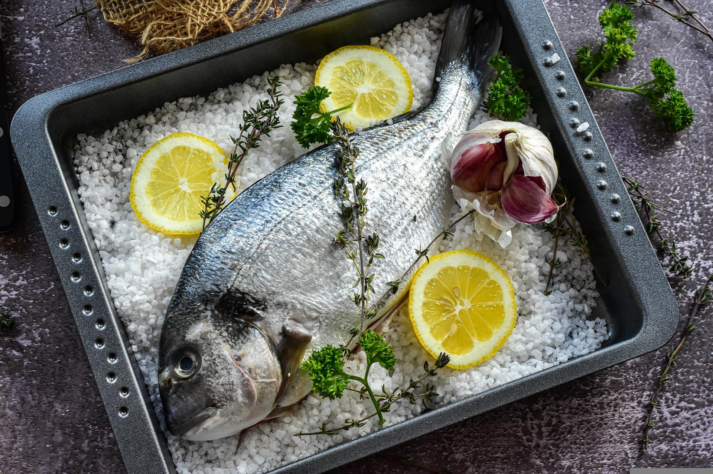

Foil-baked Sea Bream

Description
One of the easiest and most effective ways to cook fish is to wrap it in foil. All the flavours stay inside the wrap
and work their way through the fish flesh! The recipe I am presenting here requires very few ingredients, but you will
be pleasantly surprised with the flavours.
Ingredients
- Sea bream
- Rosemary sprigs
- Cloves of garlic
- Extra virgin olive oil
- Salt
- Black ground pepper
Steps
- Gut and scale the bream, then rinse it under fresh water.
- Cut a large piece of foil so that you can wrap your fish later. Spread some olive oil all around it.
- Take the fish and season its belly starting with a drizzle of olive oil and then with salt and black pepper.
- Cut the cloves of garlic in half and put it inside the fish belly. Stuff the belly with a couple of rosemary sprigs too.
- Put some rosemary inside the gills.
- Put the remaining rosemary outside, around the fish.
- Next, drizzle some olive oil over the fish.
- Season the outside with salt and black pepper.
- Close the wrap, seal it folding the sides and put it onto an oven tray.
- Pre-heat the oven to 200°C (400°F). When the oven is hot, put the tray into the oven and cook the fish for about 30 minutes.
- Once the fish is ready, remove the top skin and drizzle with some good quality olive oil.
- Serve the fish on the wrap and...
- Enjoy!